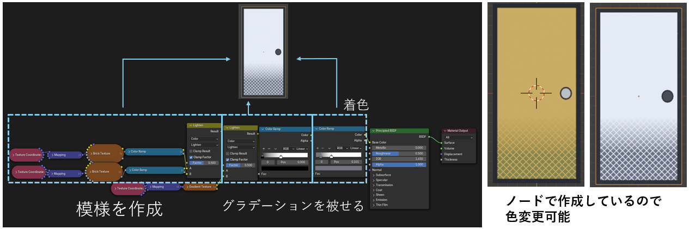
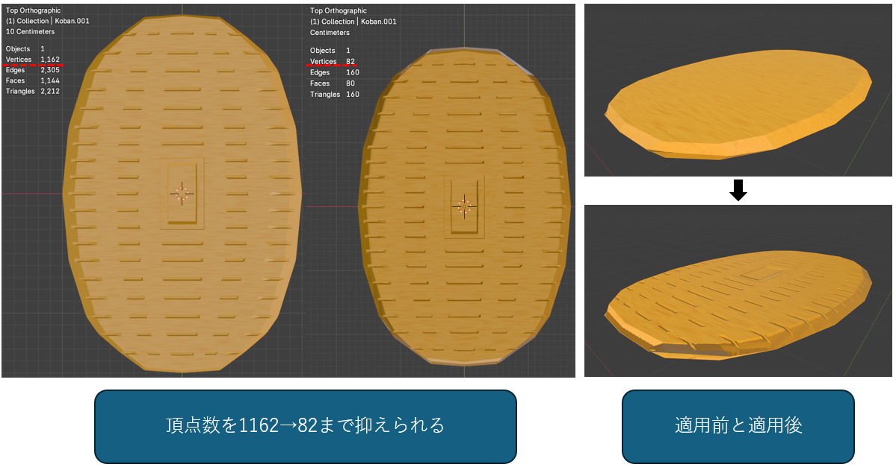
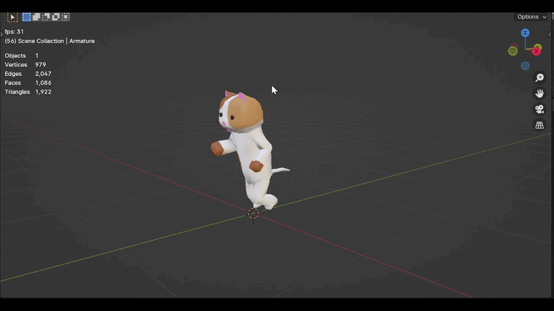

14名という大規模編成で挑んだ「冬チーム（制作期間約1.5ヶ月・実働3週間）」。
このプロジェクトは、開発初期に企画が崩壊しかけ、私が実質的なPMとしてチームを乗っ取る形で再構築を図るという、非常にタフな環境からのスタートとなりました。
最終的にゲームは完成に漕ぎ着けましたが、私自身は他メンバーのタスクを巻き取って徹夜作業を行うなど、心身ともに「燃え尽き」を経験しました。
本記事では、この壮絶なプロジェクトの軌跡と、そこから得た「組織運営のシビアな教訓」をまとめます。
プロジェクトを通して得た2つの大きな教訓
1. 仕様書は無価値になりうる
プロジェクトを通して、苦労して作成した仕様書や議事録、進捗確認用のスプレッドシートが十分に機能しないという事態に直面しました。
また開発終盤での会議で初歩的な質問が飛び交うのを見て、「見ない人は絶対に見ない」という事実を痛感しました。
仕様書や資料はただ存在するだけでは意味がなく、
- メンバーの「作業の動線上」に情報を配置する設計
- メンバーが本当に必要とする情報の検討
- 情報ソースとしての確度の担保
を行わなければ、情報共有のインフラとしては機能しないと学びました。
2. チームの「関係性の欠如」がすべての停滞を引き起こす
会議の集中力の低下や、他人の進捗に対する無関心など、チーム全体の士気が低迷した根本的な原因は「メンバー同士の仲が良くなかったこと」に集約されるのではないかと仮説を立てました。
業務的な連絡しかしない環境では、感情面・モチベーション面で大きな停滞が生まれ、会議の中でも発言しにくい空気が醸成されます。チーム内で交友ネットワークの広い人物を見つけ、会議の空気づくりを任せるなど、交友関係の把握と有効活用が重要であると考えました。
3DCG制作者としての技術的成長
マネジメントの課題と向き合う一方で、モーション付けなどゲームのコア要素の導入を行い、また3Dソフト（Blender）の機能を十分に活用できるようになるなど、3Dグラフィッカーとしても大きな成長がありました。
1. プロシージャルなテクスチャ生成
Blenderにおいては「シェーディング」と呼ばれる作業で、ノードをつなげることで様々な模様を作り出すことが可能になります。
本制作においては、各種オブジェクトに単なるベタ塗りではないプロシージャルな模様付けを行っており、表現力が大きく向上しました。

2. ノーマルマップの導入
主人公が猫ということで「猫に小判」のことわざにちなみ、小判を作成することになりました。しかし、複雑なディテールをそのままモデリングで再現すれば頂点数が制限を超過してしまいます。そのため、オブジェクトの見え方を擬似的に変化させる「ノーマルマップ」を導入しました。
ハイポリゴンモデルの凹凸情報を、ローポリゴンモデルのテクスチャへと焼き込む（ベイクする）技術を習得しました。

3. モーションの導入
Blender内でリギングとモーションの作成を行い、それをUnityへ導入するワークフローに成功しました（開発途中の仕様変更により一人称視点となったため、ゲーム内では影としてのみ確認できます）。

プロジェクトの軌跡と直面した課題
1. 破綻した企画会議と、介入の決意
本ゲームジャムで作るゲームには「既存のゲームのオマージュ」という1つのお題がありました。
開発初期、上級生のプランナー主導で企画会議が行われましたが、方向性が全く示されず、「ステージの方が動くマリオ」という一行の曖昧な議事録だけが残るカオスな状態に陥りました。
ここで学んだのは、短い一行で構想を表現することの危険性です。情報の解像度が低いと、参加者はそれぞれ自分の都合の良いバイアスで脳内補完してしまいます。結果、参加者の認識はずれたまま、深夜まで議論しても具体的なゲームシステムは何も決まりませんでした。
私は当初、ばらけていた場を整えることに終始していましたが、会議後に下級生が「このゲーム意味わからない。面白いとは思えない」とこぼしたのを聞き、彼らの前向きな思いを無駄にしてはいけないと、自らチームを統括する立場に回り、企画の抜本的な再構築（チームの指揮権の強奪）を行う決意をしました。
2. 再構成への行動、チームの再始動
2-1. 前提条件
企画再構成に当たり、あまりに時間がありませんでした。
再構成を決意した時点が深夜であり、次回の会議まで4日、その会議の日から見て中間発表まで2日しかありません。
つまり短期間で企画を構成してしまい。発表できる程度には具体化する必要に迫られました。
2-2. 体制の再構築と、再始動への準備
企画を白紙に戻しチームを再始動させるにあたり、私がクリアしなければならない課題は以下の3点でした。
- プロジェクト指揮権の移行について、団体代表および関係者へ事前調整を行うこと
- 属人性を排除した「企画再構成の手法」を策定すること
- 大規模チームを機能させる「運営体制」を設計すること
まず最初に行ったのは、ステークホルダーへの連絡と根回しです。
深夜のうちに本団体の代表へ連絡を取って翌日に対面での話し合いの場を設け、以下の項目について協議しました。
- チームの現状報告と課題の共有
- 私へ実質的な指揮権を移行することの妥当性
- 体制移行後の具体的なチーム運営方針
- これまで指揮を執っていた前任者のフォローアップ
これらの提案はスムーズに承認を得られただけでなく、具体的な運営方法についての的確なアドバイスも頂いた他、これからの助力をとりつけることもできました。これによりチームの再始動が正式に確定し、既存の企画参加者へ謝罪と再始動の連絡を回しました。
次に、企画の再構成手法とチーム運営体制の設計です。
これについては、ゲーム制作と運営経験が豊富な先輩（当時の3D部門チーフ）に助力を仰ぎました。アドバイスをもとに、企画を構成する手法から、決定後のタスク分担に至るまでの会議の流れをすべて文字に起こしアジェンダ（進行表）を作成しました。
解決策
「属人性を排除した」合意形成プロセスの導入
既存のゲーム名を出すことを禁止し、各メンバーに自分の好きな「要素」と「その理由」だけを抽出させました。
※作成したアジェンダのうち、企画構成の手法に着目した具体的なプロセスは以下の別記事にまとめています。
最後に、実働に向けたチーム運営体制の構築です。
14名という大所帯のタスクを1人で管理するのは不可能なため、部門ごとにチームを切り分け、それぞれにチーフを立てて自治（自律駆動）を行わせる手法を取りました。
外部からの要望や聞き込み、内部からの問題報告はすべて「各部門のチーフを経由する」というルールを徹底し、命令系統と情報伝達の経路を明確に区別する方式を採用しました。
2-3. 再始動会議の実行
会議当日。
会議には、相談に乗っていただいた3Dチーフにオブザーバー（メンター）として同席していただきました。これは終盤で部門ごとの通話ルームに分かれる際、各ルームの進行をサポートしてもらうことを期待したためです。
会議がスタートしてからは、事前に作り込んだアジェンダの流れに沿って全体を誘導しました。企画の土台となる「各員の意見（要素の抽出）」の書き出しも無事に完了し、意見が出揃った後は、多数決による意思決定をスピーディーに繰り返しました。
こうして集団心理をうまく利用しつつ、チーム全体で納得感のある企画内容の合意形成に至り、メンバー全員が新たな目標（発表に向けた制作準備）に向かって一斉に動き出すことができました。
3. マネジメントの機能不全と、孤立する会議
企画を再構築し、各部門にタスクを分割して実働期間に入りましたが、進捗報告会の進行を行うメンバーがキャパシティオーバーに陥りました。
報告会では進捗報告の他に、仕様を検討していなかった部分や、自分の担当範囲の中でいくつか案が思いつくものを「どれが良いか」と相談する場面がありました。
そこで具体的な選択肢を提示せずに「だれか何かないですか」と曖昧な質問を投げかけるため、誰も返答できず、会議は沈黙がほとんどの重苦しい空気へと変貌しました。
私自身はある程度、各人の意図や特性を把握しながら議論をコントロールすることに慣れており、それをするのは当然だと思っていました。
しかし、「人の話を聞きながら、全体の着地点を探り、自分の思考を構築する」という会議のファシリテーションは、非常に認知負荷が高い作業であり、それを誰もが十分に行えるわけではないのです。
単純に役割として任せてしまった私のマネジメントの見積もりの甘さが、そのメンバーを孤立させ、チームの雰囲気を悪化させる一因となってしまいました。
私はサポートに入りアドバイスを行いましたが、そのメンバーはそれを受け入れる余裕がなく、またチームの進捗への反応の無さも相まって、そのメンバー自身のメンタルも悪化していくという悪循環に陥りました。
また、進捗報告会議にはさらに問題がありました。各々の全体進捗がどの程度のものなのか誰も把握できていなかったのです。
代表に指揮権について相談した際、制作が稼働した後の運用としてスプレッドシートでの進捗管理を提案され、導入していました。
しかし、具体的なオブジェクト単位で切り分けられる3Dと違い、プログラムのタスクはシート上で定義しにくく、運用ルールも周知されていなかったため、実際には3Dチームを除いてスプレッドシートは全く使用されませんでした。
その結果、個々人の進捗は不透明なままで、進捗報告会がただ漠然と「今日やったこと」を発表するだけの場になっていたのです。
4. プレイングマネージャーの限界と「燃え尽き」
さらに開発終盤、ステージ担当のメンバーが他団体での活動（合宿）を理由に、タスクを終わらせないまま実質的に離脱しました。私はやむを得ず、ステージ作成作業（ステージの成型・UV展開・テクスチャ張り）を徹夜で巻き取る羽目になりました。
チームの不活性さ、機能しないスプレッドシート、暴走する会議、そして徹夜の尻拭い。これらが重なり、私自身もチームに対する奉仕の意思が消え、「必要最低限の干渉で済ませよう」という完全な燃え尽き状態に至りました。
5. 制作終了
限界を迎えたものの、最低限のラインは死守し、無事に発表とゲームの稼働までプロジェクトを完遂させました。
総括：やってよかったことと次への課題
発見した「上手く機能したこと」
- アジェンダの作り込み：
会議の目的を明確にし、事前のプランニングを行うことが極めて重要だとわかりました。
全体の流れを想定し、いくつかの進行案を用意したり段階別の指示を準備するなど、会議の「構造化」を行えば確実に役に立ち、当初決めた目的を果たせると体感できました。 - 大人数の分割とスモールステップ：
大人数では当事者意識が薄まるため、小さな項目（スモールステップ）について多数決を行い、決定を重ねるアプローチが非常に有効でした。
多数決にはある種の強制力と決定への納得感があるため、ひとまず合意を得た形を作ってプロジェクトを前に進めるには良い方法だとわかりました。
次へ持ち越す課題
- 見切りと判断のスピードアップ：
「しばらく諦観していた」という初期の対応の遅れは明確な落ち度でした。
やる気のないメンバーや機能しない体制への放置は傷を深くするだけであり、素早く見切りをつけて体制を変更する判断力が必要だと痛感しました。 - 個人の力技に頼らない「組織の土台」の構築：
不足したリソースを個人作業で補うプレイングマネージャーの手法は、いずれ必ず破綻します。今後は技術的なカバーだけでなく、誰もが情報を得やすく、互いにリスペクトし合える「組織としての仕組み（土台）」の設計に注力したいと考えています。